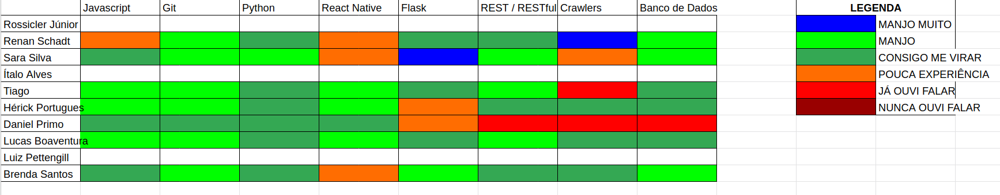

Análise e Retrospectiva
1. Visão Geral
Número da Sprint: 7
Data de Início: 04/10/2020
Data de Término: 10/10/2020
Duração: 7 dias
Pontos Planejados: 43 pontos
Pontos Entregues: 43 pontos
Dívida Técnica: 0 pontos
Membros Ausentes: Luiz Pettengill
2. Resultados
2.1 Repositório Docs
- História: #70 - Documentar Agile EVM
Responsáveis: Brenda, Renan, Rossicler e Sara
Pontuação: 5
Status: Concluído - História: #71 - Atualizar Backlog do Produto com tasks e diagrama de Gantt
Responsáveis: Renan
Pontuação: 3
Status: Concluído - História: #72 - Adicionar padrões recomendados de comunidade aos repositórios
Responsáveis: Sara
Pontuação: 2
Status: Concluído - História: #73 - Documentar Sprint 7
Responsáveis: Renan
Pontuação: 3
Status: Concluído
Uma dívida técnica foi herdada da Sprint 6:
- História: #62 - Revisar e corrigir documentos e READMEs
Responsáveis: Renan, Rossicler e Sara
Pontuação: 8
Status: Concluído
2.2 Repositório Frontend
- História: #31 - Aplicar padrões ao código
Responsáveis: Ítalo e Hérick
Pontuação: 3
Status: Concluído - História: #32 - Atualizar telas de acordo com o protótipo
Responsáveis: Ítalo e Hérick
Pontuação: 5
Status: Concluído - História: #33 - Mostrar detalhes de uma ocorrência
Responsáveis: Tiago
Pontuação: 3
Status: Concluído
Uma dívida técnica foi herdada da Sprint 6:
- História: #22 - Visualizar cidades em formato de mapa de calor
Responsáveis: Daniel, Luiz e Lucas
Pontuação: 8
Status: Concluído
2.3 Repositório User-Service
- História: #26 - Configurar ferramenta de cobertura
Responsáveis: Rossicler
Pontuação: 1
Status: Concluído
2.4 Repositório Secretary-Service
- História: #26 - Configurar ferramenta de cobertura
Responsáveis: Rossicler
Pontuação: 2
Status: Concluído
3. Velocity

4. Burndown

4.1 Burndown Review/QA

5. Gráfico de Contribuições
5.1 Contribuições na Documentação

5.2 Contribuições no Frontend

5.3 Contribuições no User-Service

5.4 Contribuições no Secretary-Service

6. Retrospectiva
Pontos Positivos
- A Release 1 (R1) foi concluída e tirou um grande peso das costas do grupo
- O grupo teve mais tempo para se preparar para R1 por conta da ausência de aulas de EPS/MDS
- A R1 e o processo de gravação de vídeo uniu mais o grupo
- Com a apresentação da R1 alguns pontos sobre o projeto ficaram mais claros pra todos os membros
- As issues foram feitas com antecedência
Pontos Negativos
- Por não ter feedback instantâneo o planejamento da próxima sprint fica sem correções sugeridas pelo professor
- Grupo teve dificuldades para fazer EVM
Melhorias
- Sugerir professor ver o vídeo ao vivo com o grupo para feedback instantâneo
7. Quadro de Conhecimentos

8. Análise do Scrum Master
Time
Oitava sprint do projeto marcada por ser a sprint da Release 1. Sprint super produtiva, onde as tarefas planejadas foram realizadas (inclusive as dívidas técnicas) e o vídeo para R1 foi gravado.
Apesar do grande esforço empregado para que todas atividades planejadas fossem entregues o grupo apontou muito mais pontos positivos na retrospectiva, destancando o alívio que foi passar a R1 e o fato de estarmos mais unidos depois de sofrermos juntos no calor durante 5 horas entre ensaios e gravações. Além disso a apresentação fez um nivelamento geral do grupo em relação a vários conceitos que ainda não tinham ficado tão claros.
Métricas
Na Sprint 7 foram concluídos 43 pontos dos 43 planejados, o Velocity atual da equipe é de 44 pontos com oito sprints fechadas e 343 pontos entregues no total. Observamos que em semanas onde identificamos alta probabilidade de riscos chave, como conflito com outras disciplinas e divergência de horários, a equipe consegue entregar entre 35 e 40 pontos, caso contrário a equipe consegue entregar entre 40 e 50 pontos.
O Burndown da Sprint 7 mostra o ótimo comportamento da equipe ao finalizar várias tarefas com antecedência, o Burndown considerando a fase de Review/QA evidencia isso ainda mais.
Os Históricos de Contribuição apresentam uma quantidade grande de commits no começo e meio da sprint, que é o comportamento esperado, a quantidade pequena de commits no fim da sprint indica um comportamento positivo de tarefas feitas com antecedência.
O Quadro de Conhecimento está começando a mostrar evoluções mais lentas agora que os membros estão acostumados a usar as tecnologias em questão.
Histórias
Para ajudar na conclusão da dívida Visualização das cidades por mapas de calor deslocamos um membro extra a ela, a tarefa foi concluída no começo da sprint. Quanto a Revisão de Documentos fizemos um esforço conjunto e conseguimos melhorar e atualizar os documentos do projeto que julgamos necessários, estamos bem satisfeitos com estado da documentação após essa revisão.
Houve depêndencia entre algumas issues do frontend nessa sprint, mas o grupo conseguiu administrar isso de maneira eficaz, realizando uma ordem adequada de execução e merges para que esse problema fosse minimizado.
Para realização do Vídeo da Release 1 foi criada uma issue, mas essa não foi pontuada, entre ensaios e apresentação o grupo empreendeu um grande esforço para realizá-la. O vídeo gerado encontra-se disponível no repositório visual da documentação do grupo.
As demais tarefas são auto-explicativas e ocorreram sem intercorrências.
Riscos
Entre os riscos monitorados pelo grupo os que ocorreram na sprint foram:
- Divergência de horários entre membros da equipe
- Conflito de dependência entre atividades
- Ausência de membros durante reuniões do grupo
- Erros durante o planejamento das atividades
- Falta de comprometimento de membros com o projeto
Os dois primeiros riscos eram esperados no planejamento e foi possível realizar algumas ações preventivas e reativas, em relação aos outros riscos só tomamos as ações reativas.